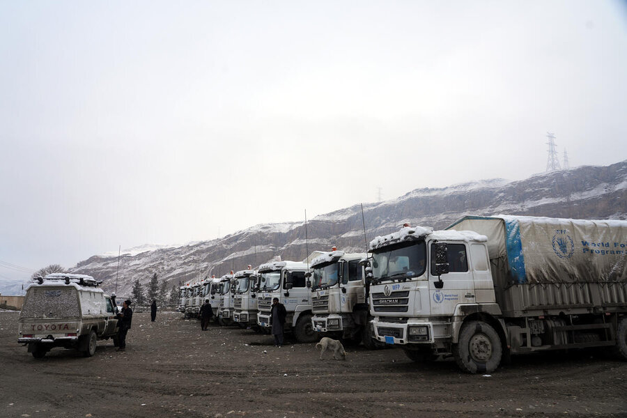
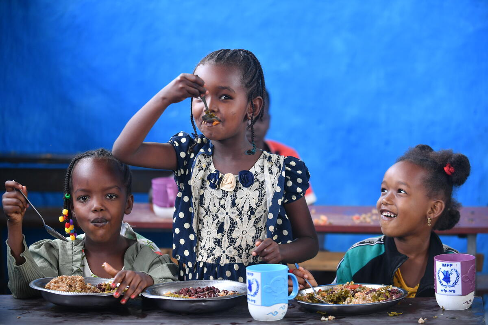
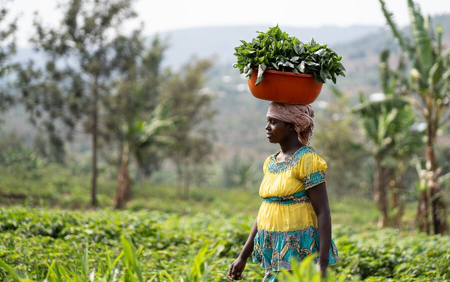
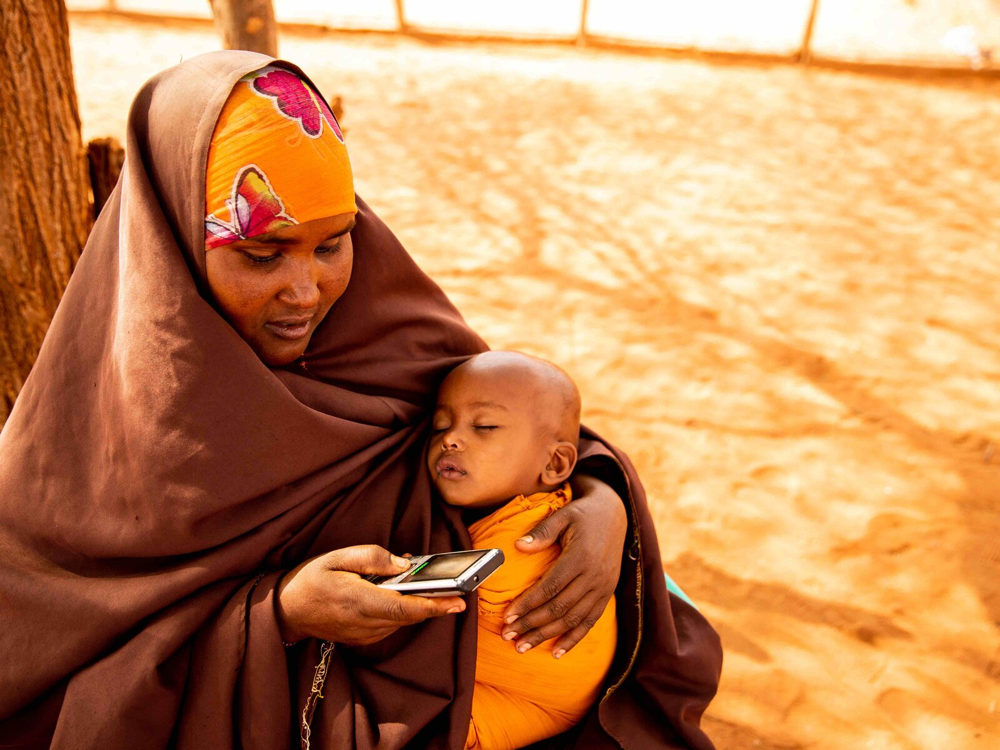
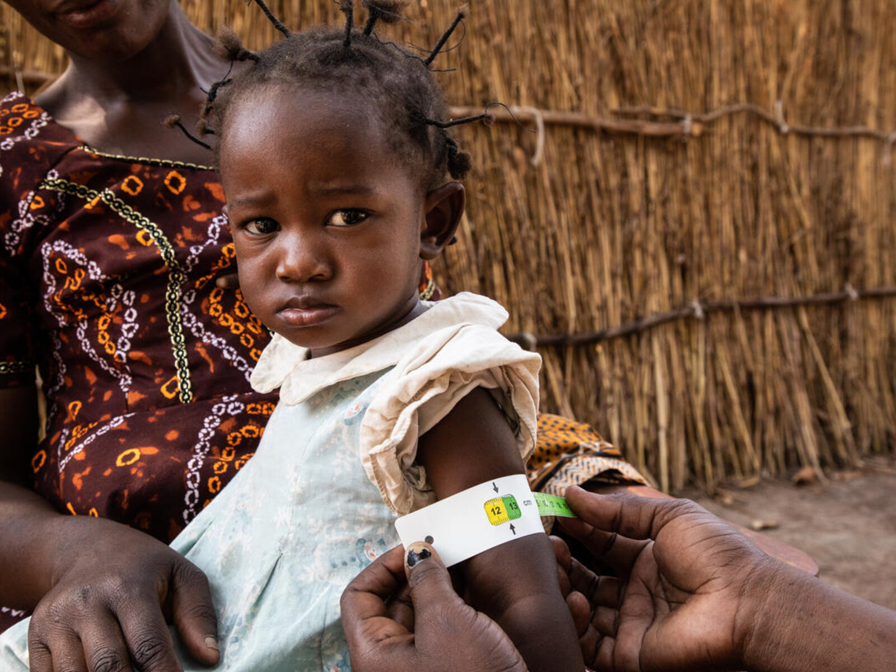
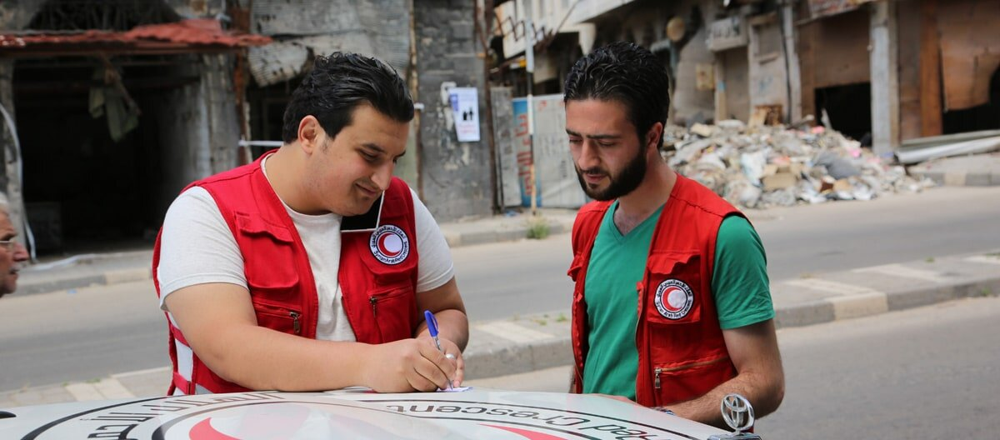

Help in an emergency
Getting food to people when conflict or disasters interrupt everyday life.
World Food Programme
Meet the United Nations organisation helping people build a future without hunger.
From a meal at school to food in an emergency, discover how WFP helps—and why it matters.
Discover WFP
Part of the United NationsA humanitarian organisation
Food assistanceIn emergencies and beyond
Nobel Peace Prize, 2020Recognised for fighting hunger
Explore six ways WFP supports people.
Hover to pause · Swipe to explore

Getting food to people when conflict or disasters interrupt everyday life.
Supporting school meals so children have energy to learn, play and grow.

Helping farmers protect their harvests and connect with markets.

Cash and vouchers can help people buy food when local markets are working.

Nutrition support helps young children and mothers get the nutrients they need.

Communities, partners and voluntary contributions make WFP’s work possible.
A short video that explains who WFP is, how it began in 1961 and how it helps people around the world.
Video by Global Rights Zone on YouTube. An independent video, not made by WFP. Watch on YouTube
Read a little, explore an example, then try the question.
Emergency help, school meals, nutrition and support for farmers: different kinds of work, with a shared goal of ending hunger.
Food assistance is about people: their needs, their choices and their futures.